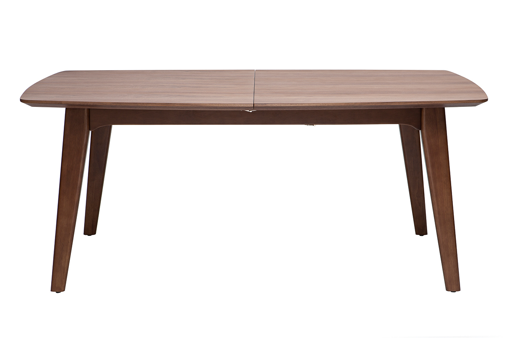

Élégance et qualité pour cette table extensible rallonges intégrées FIFTIES. Avec un design scandinave des années 60, elle apportera à votre salle à manger une touche vintage tout en finesse. Ses dimensions idéales pour une table rectangulaire et sa rallonge (L50 x P100), vous permettront d'accueillir famille et amis en toute convivialité. Sans effort, il suffit de séparer le plateau en deux pour laisser dévoiler sa rallonge papillon.En panneaux de fibres de bois 2,5 cm finition noyer, sa ligne douce et harmonieuse vous permettra de créer une atmosphère chaleureuse et épurée. Elle s'assortira parfaitement avec les autres meubles de la gamme, buffets et meuble TV.